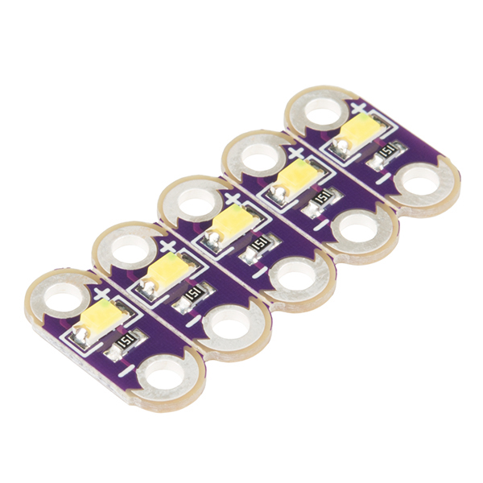
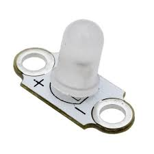
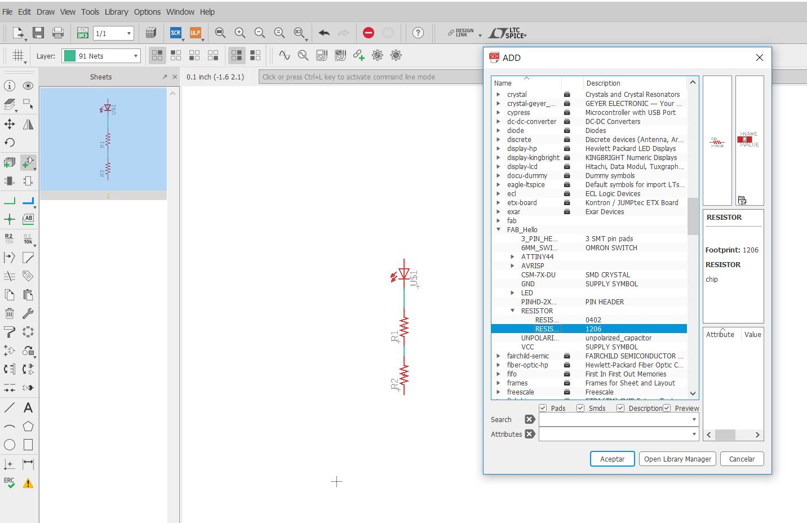
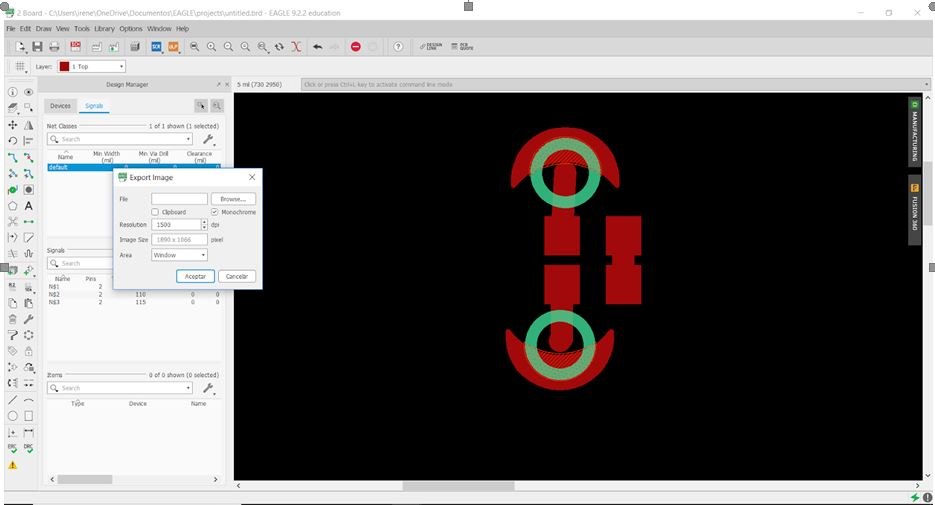
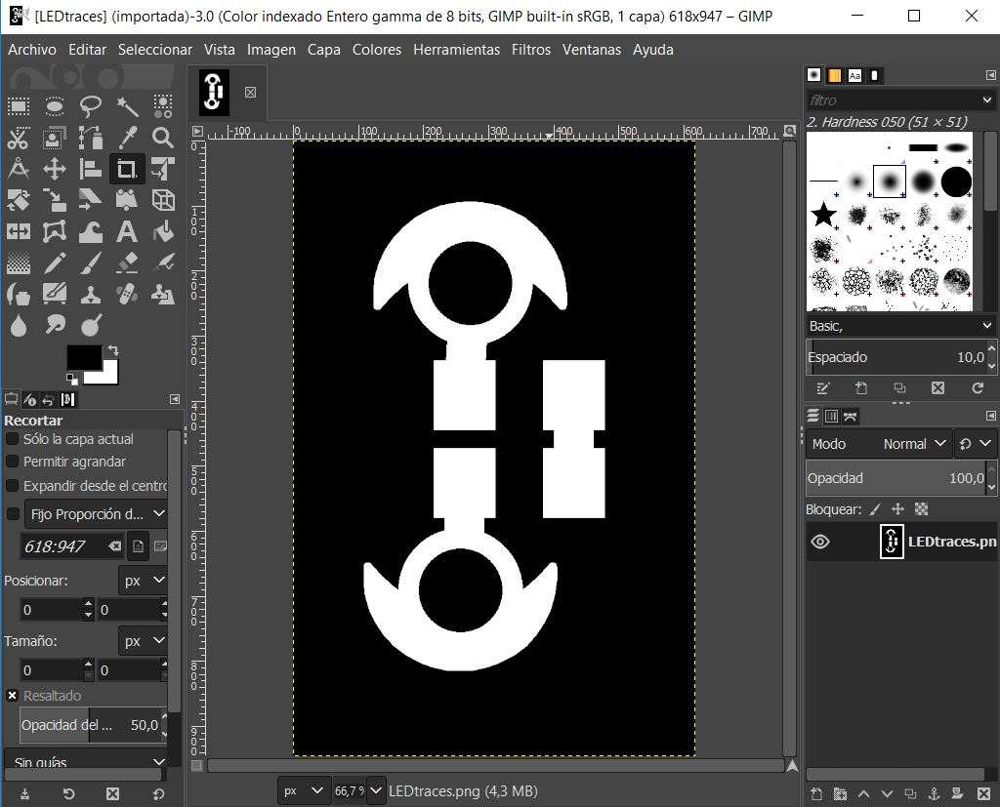
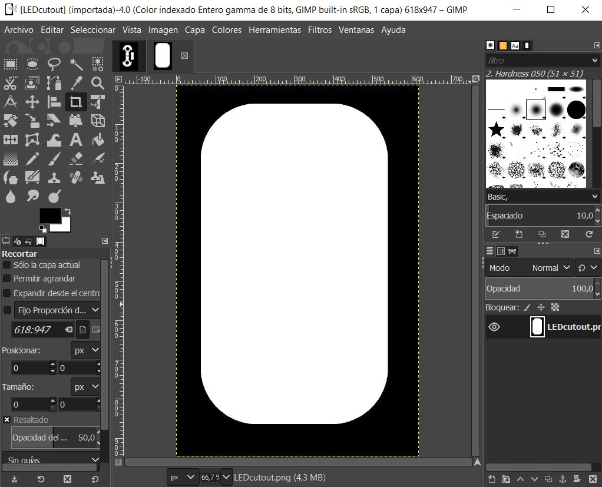
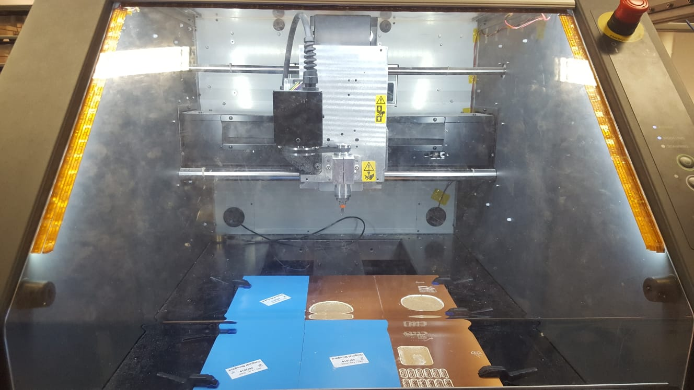

SEWABLE LED
Sewable LED is quite possible one of the eassiest ways to incorporate simple illumination and color effects into e-texitles (electronic textiles).
 
It is noteworthy that it is necessary to make a LED sweable board due to this kind of LED is a surface mounted device. It must be done using a software called EAGLE.
EAGLE
Firstly a schematic must be designed. Once we are in Eagle, a LED and some resistors have to be added in our design (we always use the package 1026). To connect all this components, the tool NET must be used.

After that, it is required to click on the generate/switch to board to design the LED sweable board.
There, the components must be moved to the area it is required and, it is also very important, to place them as closest as possible.
Then, to make it possible, the components has to be connected by using ROUTE, and to finish, the design has to be exported to be able to use them in photoshop or, in our case, in GIMP.

GIMP
Once we have import the image, an area must be selected around the design, and then, a second rectangle has to be drawn inside the first area. It is very important to make sure that the measures in Gimp are the same ones than in Eagle.
This procedure has to be done twice, due to it is required two images. In our case they were LEDtraces and LEDcutout.
 
To finish all the process, this two images must be exported, and they will be cut later by using the CNC milling machine, as it is shown in the following picture.
